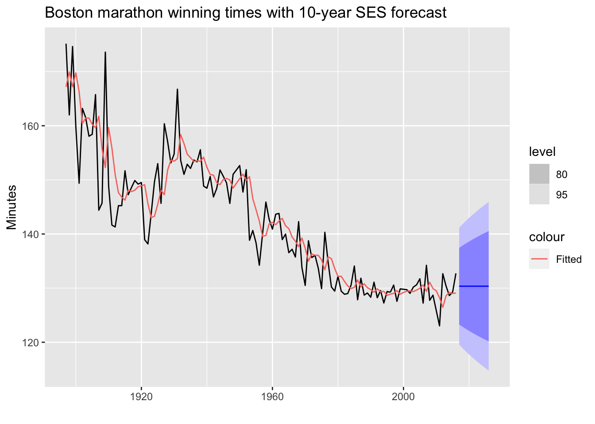

This article is the second in a series comparing the fpp2, fpp3, and modeltime forecasting frameworks in R. Specifically we’ll be focusing on how to automatically choose both exponential smoothing and ARIMA models.
# Load libraries
library(fpp2) # The forecasting OG
library(fpp3) # Official update to fpp2
library(modeltime) # The forecasting newcomer
library(timetk) # Companion to modeltime
library(parsnip) # Common interface for specifying models
library(tidyverse) # Data manipulation tools
library(cowplot) # Arranging plotsETS model forecasts can be quickly generated and generalize well to many different types of time series
The following examples will utilize a dataset containing yearly winning times of the Boston marathon.
# Load Boston marathon winning times
m_tbl <- fpp2::marathon %>%
tk_tbl(rename_index = "year") %>%
mutate(year = ymd(year, truncated = 2L))
# Check it out
m_tbl %>% head()
## # A tibble: 6 x 2
## year value
## <date> <dbl>
## 1 1897-01-01 175.
## 2 1898-01-01 162
## 3 1899-01-01 175.
## 4 1900-01-01 160.
## 5 1901-01-01 149.
## 6 1902-01-01 163.# Convert to tsibble
m_tsbl <- fpp2::marathon %>% as_tsibble()
# Fit a SES model: additive errors, no trend, no seasonality
fit <- m_tsbl %>%
model(ets = ETS(value ~ error("A") + trend("N") + season("N")))
# Forecast for 10 years into the future
fc <- fit %>% forecast(h = 10)
# Plot forecasts + one-step forecasts for the training data
fc %>%
autoplot(m_tsbl) + # Plot actual data
geom_line(aes(y = .fitted, colour = "Fitted"),
data = augment(fit)) + # Show how model fits the data
labs(title="Boston marathon winning times with 10-year SES forecast",
x="", y="Minutes") 
💡 If your data has no trend and no seasonality, then an SES model may work well.